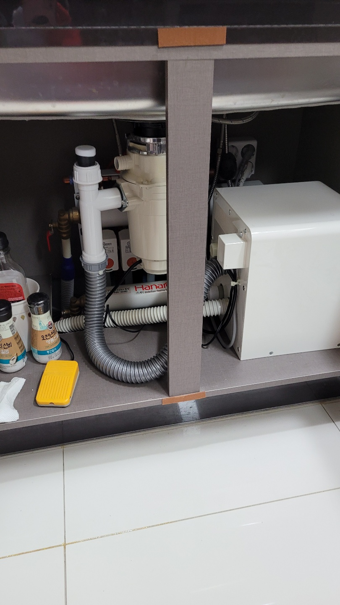
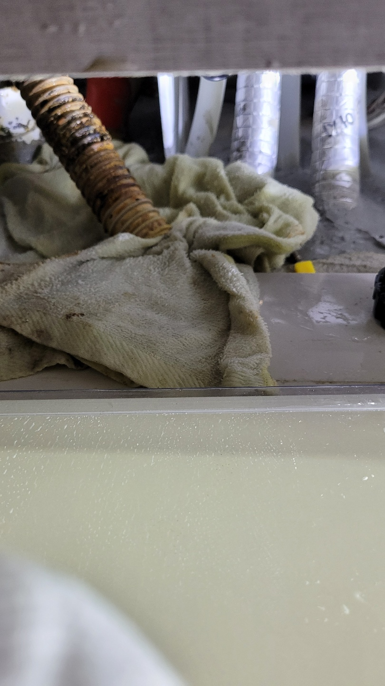
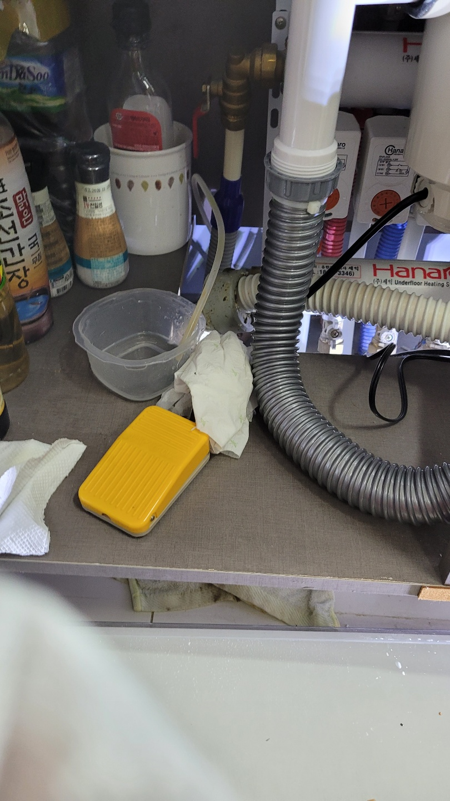
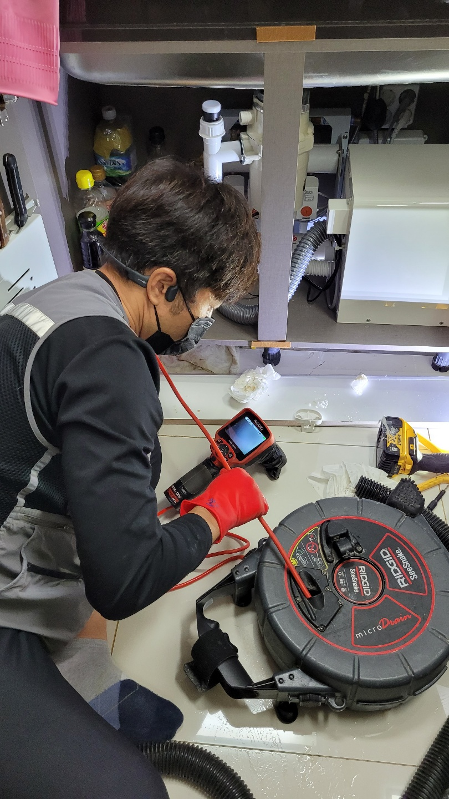
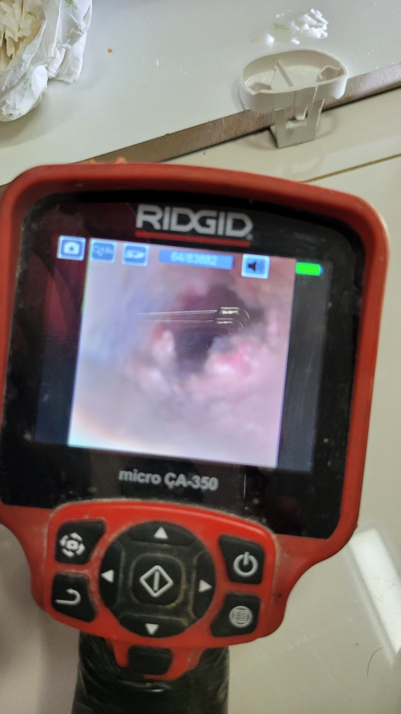
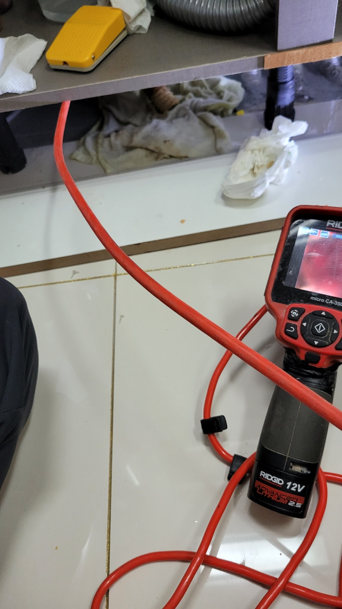
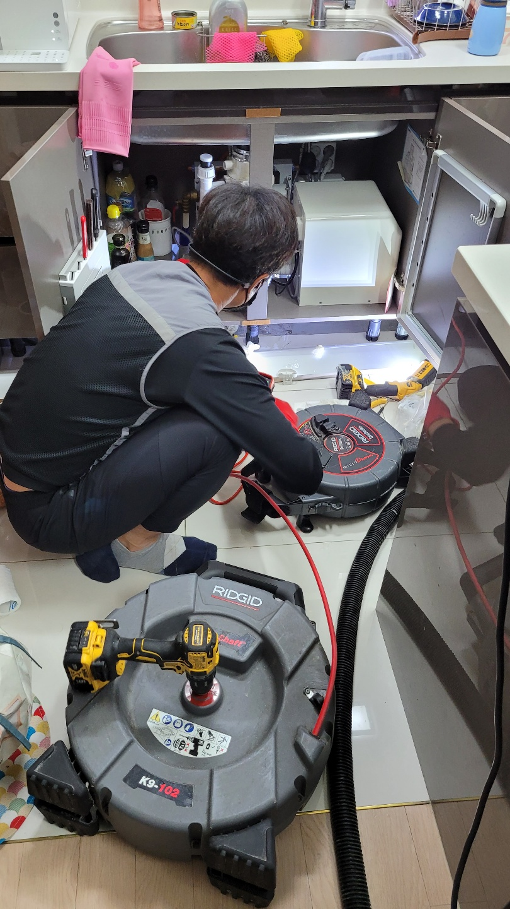

🏠 시흥시 배곧동 정왕동 목감동 싱크대막힘 음식물처리기막힘
시흥 정왕동 싱크대막힘 전문 시공 후기

📋 작업 개요
- 위치: 시흥 정왕동, 정왕동, 시흥
- 서비스 유형: 싱크대막힘, 하수구막힘, 배관막힘, 누수수리, 뚫는업체, 배관청소, 고압세척
- 작업 일시: 2021. 10. 9. 0:43
- 업체명: 하수구수사대 (010-5615-2118)
🔍 문제 상황
시흥시 배곧동 정왕동 목감동 싱크대막힘 음식물처리기막힘
안녕하세요
슬기로운 하수구 생활 입니다^^
하수구는 우리가 일상적으로 씻거나 빨래를하고
음식을 하면서 사용한물을 흘려보내는 곳으로
막힘증상이 생긴다면 불편할수 밖에 없습니다.
오늘은 시흥에 위치한 신축으로 입주한지 2년가량 된
아파트인데 막힘증상으로 연락을 주셨습니다.
신축으로 입주하셔서 2년가량 음식물처리기를
사용하셨는데 물이 시원하게 내려가지않아
음식물처리기 문제인줄 아시고 해당업체에
as요청을 하셨답니다.
슬기로운하수구생활
010-2340-2118
as기사분이 점검하시고 결론은 하수구에서 막힌것 같다고
뚫어야한다고 하고 가셨다네요.
음식물처리기가 여러모로 편한것도 있겠지만
배관구배나 구조가 좋지않고 관리를 하지 않으면
짧은기간내에 막힐수 있어서 음식물처리기 설치는 신중하게
결정하셔야합니다.
우선 배수구쪽에서 문제가 있는지 확인하기위해
기본적인 작업을하고 배관상태를 내시경카메라를

🔎 원인 분석
💡 전문가 진단: 슬기로운하수구생활010-2340-2118
통해 확인해보았습니다.
배관에 기름슬러지가 꽉차있고 이정도면
음식물처리기가 음식물을갈아서 물도 내려가기
힘든상태입니다.
이정도 상태라면 배관을 뚫는작업은 효과가
없어 배관을 복원시키는 세척작업을 진행하기로
결정하였어요.
이미 배관에 기름덩어리가 가득 차있기때문에
뚫는 장비로는 효과를 거의 보지 못하기에
깨끗하게 세척을하고 배관구배나 구조를 파악한후
관리하는 방법이 최선입니다.
배관세척에는 여러가지가 있는데
고압세척도 있지만 실내에서는 적합하지가 않아
싱크대배관세척에 최적화 되어있는 플렉스샤프트 장비로
진행을 하는데 효과는 고압세척과 99% 동일하다고
보시면 됩니다^^
중간중간 내시경을 보면서 기름슬러지 상태를 보면서
작업을 진행하게 되는데요 배관구조를 먼저 파악하는게
우선으로 길이를 먼저 파악을하게 됩니다.
싱크대막힘은 두가지로 분류해 볼 수 있는데요
한가지는 단순막힘으로 호스에 음식물이 끼어 막히는경우와
배관에 기름덩어리가 많이 쌓여 막혀있는 경우 등

🔧 작업 과정
크게 두가지입니다.
단순하게 호스에 음식물이 끼어있는경우는
스스로도 해결이 가능하니 한번쯤은 시도해도 좋을거 같아요
아무래도 배관에 기름슬러지가 많으면
악취또한 심해지는데 하부장에서 악취가 올라온다면
한번 점검을 받아보시는것도 좋아요.
보통 싱크대냄새의 원인은 기름슬러지 확률이 높은데
이유는 싱크대주변에 하수구는 싱크대하나 뿐이에요.
보통 하수구나 배수구에 오바이트 호스에
기름슬러지가 썩어 냄새가
나는 경우가 많기 때문이에요.
내시경을 보면서 배관에 남아있는 그름슬러지를
제거하여 마무리 작업을 진행하고 있습니다^^
기름슬러지를 제거하고 보니 구조도 나쁘지만
그것보다 구배가 너무 좋지 않네요
화면상으로는 잘 보이이지 않지만
배관에 물이 3분에2가량 차있는것이
보입니다. 이렇게 배관구배가 좋지 않으면
기름성분이 배관위쪽부터 조금씩붙어
시간이 지나면 점점 딱딱하게 굳어 가게 되요.
구조적인건 비용이 많이 들기때문에
최대한 관리를 하여 기름이 배관에 굳지 않게
해주는것이 최선입니다.
배관에 기름기가 완벽하게 제거가 되어
내려가는 수직관까지 깨끗하게
보입니다.
아파트의 메인관은 거의 수직관으로 되어있어
막힐일이 없어 세대배관내에 수직관까지만
청소를 하면 마무리가 된다고 아시면 됩니다^^
물이 떨어지는곳에는 기름기가
붙을 확률이 거의 없죠^^
싱크대에 물을 받아서 내려본후
혹시나 위쪽에 연결부위에서 누수가 있는지
확인도 해보는것도 중요합니다.
배관상태는 처음처럼 깨끗하게
청소를 했지만 앞으로 관리가


✅ 작업 완료
더욱 중요하기 때문에 고객님께
관리요령을 설명해 드리고 마무리를 하였습니다.
이처럼 음식물처리기때문에 배관이
막히는 경우가 많습니다.
특히 음식물처리기를 사용하지 않다가
음식물처리기 설치한지 1년만에 막히는
경우가 많기때문에
음식물처리기 설치전에 한번쯤 점검해 보는것도
좋을거 같습니다.




⚠️ 베란다 누수 및 방수 관리 방법
- ✅ 비가 많이 올 때 창틀 주변이나 아래층 천장에 얼룩이 생기는지 정기적으로 확인해 보세요.
- ✅ 우수관 주변 실리콘 마감이 들뜨거나 깨진 틈새가 있는지 손상 여부를 수시로 체크하세요.
- ✅ 베란다 바닥 타일의 줄눈(메지)이 소실되면 그 틈으로 물이 침투하여 누수가 유발됩니다.
- ✅ 누수 의심 증상 발견 시 방치하면 아래층 손실이 커지므로 즉시 전문가의 진단을 받으십시오.
💡 핵심 정리
- 확실한 장비 작업(내시경 점검 및 샤프트 스케일링)으로 원인을 뿌리 뽑습니다.
- 작업 후 1년 이내에 동일한 부위 재발 시 100% 무상 A/S 서비스를 보장합니다.
- 서울 · 경기 · 인천 전 지역에 24시간 언제든 긴급 출동할 수 있도록 항시 대기 중입니다.
❓ 자주 묻는 질문 (FAQ)
🚨 시흥 정왕동 싱크대막힘 문제로 고민이신가요?
정확한 원인 진단과 확실한 시공으로 재발 없는 해결을 약속드립니다.
24시간 긴급 출동 | 서울 · 경기 · 인천 전지역 | 1년 내 재발 시 무상 A/S